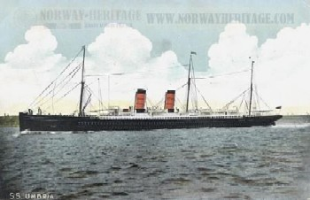

SS Empress of Britain - Canadian Pacific Line |
Owner: 1906-1930: Canadian Pacific Line
Port of Registry: 1891-1914: Canada
Builder: Fairfield Shipbuilding and Engineering Company, Govan, Scotland
Laid down: 1890; Launched: 11 November 1905
Maiden voyage: 5 May 1906
In service: 1906; Out of service: 1930; Fate: Scrapped in 1930
Class and type: Ocean liner
Tonnage: 14,189 tons; Length: 458.8 ft.; Beam: 65.7 ft.
Installed power: Two funnels, two masts, twin screws
Propulsion: Quadruple expansion steam engines
Speed: 18 knots
Capacity: 310 1st class passengers; 470 2nd class; up to 730 steerage
SS Empress of Ireland - Canadian Pacific Line |
Owner: Canadian Pacific Line
Port of Registry: Canada
Builder: Fairfield Shipbuilding and Engineering Company, Govan, Scotland
Launched: 27 January 1906; Christened: 27 January 1906
Maiden voyage: 29 June 1906
Fate: Sank after colliding with Storstad on 29 May 1914
Tonnage: 14,191 gross register tons (GRT)
Length: 570 feet (174.1 m)
Beam: 65.6 feet (19.99 m)
Installed power: Quadruple expansion steam engines
Propulsion: Twin Screws
Speed: 18 knots
Capacity: 1,580
SS Laurentic - White Star Line |
Owner: White Star Line
Ordered: 1907
Builder: Harland and Wolff
Yard number: 394
Launched: 1908
Maiden voyage: 29 April 1909
Fate: Struck two mines and sank, 25 January 1917
Tonnage: 14,892 Gross Register Tonnage
Length: 565 ft (172 m)
Beam: 67 ft 3 in (20.5 m)
Installed power: riple-expansion steam engines driving outboard propellers
with low-pressure turbine driving the center propeller. Total 11,000 indicated horsepower. Propulsion: Triple screws
Speed: 30 km/h/18 mph
Capacity: 1st Class: 230; 2nd Class: 430; 3rd Class; 1,000
SS Lord Clive - American Line |
Owner: American Line
Builder: R. J. Evans Co.
Launched: 28 October 1871
Maiden voyage for Dominion: 15 September 1872
Fate: Scrapped 1898
Tonnage: 3,386 Gross Register Tonnage
Length: 381 ft (117 m)
Beam: 40.1 ft (12.3 m)
 SS Megantic - White Star Line |
Owner: White Star Line
Builder: Harland and Wolff, Belfast
Launched: 1908
Maiden voyage: 17 June 1909
Out of service: 1931
Fate: Sold for scrap 1933
Tonnage: 14,878 Gross Register Tonnage; 9,183 Net Register Tonnage
Displacement: 20,470 long tons (20,800 t)
Length: 550.4 ft (167.8 m)
Beam: 67.3 ft (20.5 m)
Height: 41.2 ft (12.6 m)
Draught: 27 ft 6 in (8.4 m)
Decks: 3 decks, 2 partial decks
Installed power: Twin quadruple-expansion reciprocating steam engines
Propulsion: Twin screws
SS Tunisian - Allan Line |
Owner: Allan Line
Builder: Alex Stephen & Sons
Launched: 1900
Maiden voyage: 5 April 1900
Out of service: 1927
Fate: Sold for scrap 1910
Tonnage: 10,576 Gross Register Tonnage
Displacement: 20,470 long tons (20,800 t)
Length: 500.6 ft (167.8 m)
Beam: 59.2 ft (18.2 m)
Propulsion: Twin screws
Speed: 16 knots Capacity: 1st Class: 240; 2nd Class: 220; 3rd Class; 1,000
|  SS Umbria - Cunard Line |
Owner: Cunard Line
Builder: John Elder Co.
Launched: 26 June 1884
Maiden voyage: 1 November 1884
Out of service: 1927
Fate: Sold for scrap 1933
Tonnage: 7,718 Gross Register Tonnage
Displacement: 8,128 long tons
Length: 501.6 ft (154.3 m)
Beam: 57.2 ft (17.6 m)
Propulsion: Single screw
Speed: 19 knots Capacity: 1st Class: 550; 3rd Class; 800